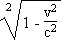
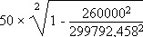

Như ta đã biết theo lý thuyết sự co rút chiều dài và thời gian của Einstein thì một người càng di chuyển với vận tốc gần vận tốc ánh sáng, thời gian đối với người đó đi chậm hơn là người quan sát ở bên ngoài.
Ðẳng thức về thời gian:
t' = t x

Với vận tốc ánh sáng là c = 299792,458 km/s
Ta lấy thí dụ có một cặp anh em sinh đôi, một người ở trên trái Ðất còn người kia đang bay trong không gian với vận tốc 260 000 km/s. Xem như thời gian gia tăng tốc lực và thắng không kể.
Người trên trái Ðất chờ đợi 50 năm cho tới ngày về của người anh em song sinh sau chuyến du lịch.
Vì chịu ảnh hương của sự co rút thời gian, người du hành chỉ già đi có 25 tuổi:
Ta hãy làm bài Toán:
t' =

t' = 24 năm, 10 tháng, 21 ngày
Nhân vật trên trái đất bây giờ già bằng... cha của anh em song sinh của mình!